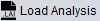
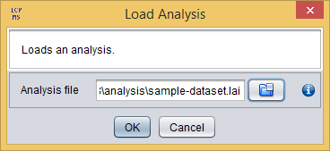

La-iMageS allows you to save your analysis in .lai files. The  operation will show you the Load Analysis dialog, which requires you to select the .lai file with the analysis.

Load analysis dialog
If the parameters.conf file is present in the data directory, then the data acquisition parameters are automatically loaded. You will notice that loaded parameters are highlighted with a green background.